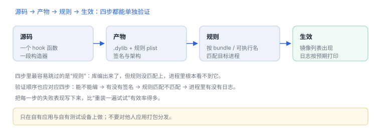

写一个最小 tweak：四步走通
四步：写代码、出产物、写规则、验证生效——每步都能单独失败
上一讲说清了 tweak 是什么；这一讲把它做出来。目标很小：在自有应用里，让一个方法多打一行日志。四步走完，你就有了一套可以反复用的流程。
场景 代码写完、编译通过、装到设备上，打开应用却什么都没发生。多数时候不是代码错，而是四步里有一环没走通——最常见的是规则没匹配上。
1. 工程结构
最小目录
MiniTweak/
├── Tweak.xm # 你的 hook 代码
├── Makefile # 目标进程、架构、产物名
├── control # 包信息（名称、版本、依赖）
└── layout/ # 安装后落盘的位置四个文件各管一件事：代码、构建参数、包元信息、安装布局。缺任何一个，产物都装不上或装上了不生效。
2. 写代码：只做一件事
Tweak.xm
%hook LoginService
- (NSString *)requestToken:(NSString *)account {
NSString *token = %orig; // 先拿原结果
NSLog(@"[MiniTweak] account=%@ len=%lu", account, (unsigned long)token.length);
return token;
}
%end要点：先调 %orig 再记日志，避免影响原逻辑；只读参数与返回值，不改业务结果。
3. 出产物：dylib 与规则
Makefile 关键项
TARGET := iphone:clang:latest:14.0
ARCHS := arm64 arm64e
TWEAK_NAME := MiniTweak
MiniTweak_FILES := Tweak.xm
MiniTweak_FRAMEWORKS := Foundation UIKit
include $(THEOS)/makefiles/common.mk
include $(THEOS_MAKE_PATH)/tweak.mk构建产物是 MiniTweak.dylib 加一份注入规则。ARCHS 必须覆盖目标设备架构；TARGET 决定了最低系统版本。
4. 写规则：只在目标进程加载
注入规则
Filter = {
Bundles = (com.example.minitarget);
};规则写错的表现是“完全没反应”——库编得再好，没被加载就等于不存在。

5. 验证：先确认被加载，再看日志
- 看进程的镜像列表里有没有
MiniTweak.dylib——没有就是规则或安装位置的问题。 - 有镜像但没日志：判断函数是否被调用（在方法入口下断点）。
- 有日志但值不对：检查参数类型与
%orig的调用时机。 - 崩溃：多半是构造函数里访问了尚未初始化的对象，把逻辑延后到主队列。
6. 打包与回滚
| 动作 | 做什么 | 出问题怎么退 |
|---|---|---|
| 安装 | 把 dylib 与规则放到注入器读取的目录 | 删除文件后重启进程 |
| 更新 | 替换 dylib 并重启目标进程 | 保留上一版文件 |
| 回滚 | 换回旧文件 | 崩溃循环时用安全模式 |
没有“卸载回调”，所以回滚靠文件替换 + 重启进程，不靠代码里的清理逻辑。
7. 常见错误
| 现象 | 原因 | 下一步 |
|---|---|---|
| 编译通过，装完无反应 | 规则未匹配或目录不对 | 查镜像列表 |
| 应用启动即崩 | 构造函数里做了重活 | 延后到主队列 |
| 只有部分页面生效 | 方法在别的进程或另一实现 | 确认作用域与选择子 |
| 升级应用后失效 | 类名或方法名变了 | 重新枚举方法列表 |
边界
这套流程只用于自有应用与自有测试设备。对他人应用打包注入并分发，不在本书范围。
这套流程只用于自有应用与自有测试设备。对他人应用打包注入并分发，不在本书范围。
8. 自测
- 四个文件里，哪一个决定“库会不会被加载”？
- 为什么建议先调
%orig再打日志？ - “装完无反应”应该先查哪一步？
- 没有卸载回调，回滚靠什么？